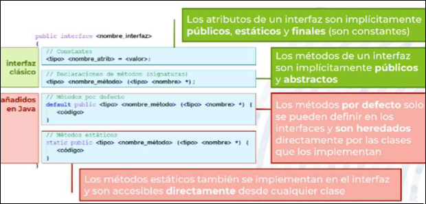
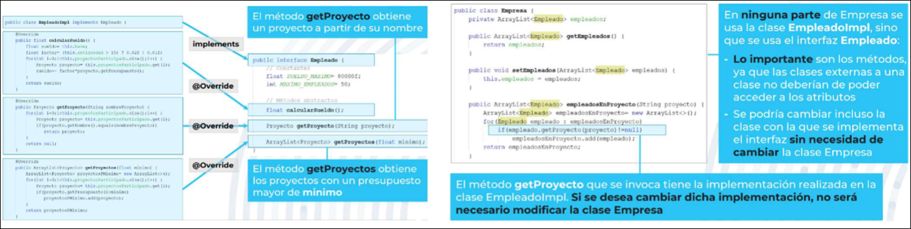
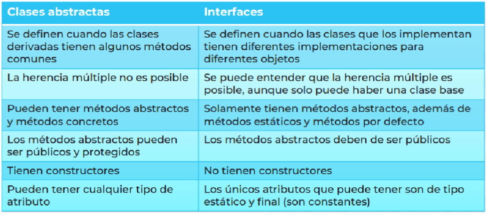
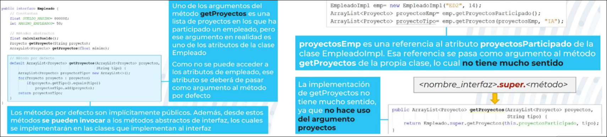
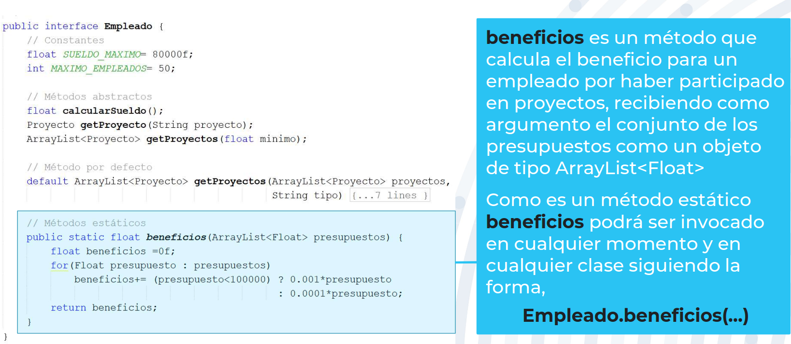
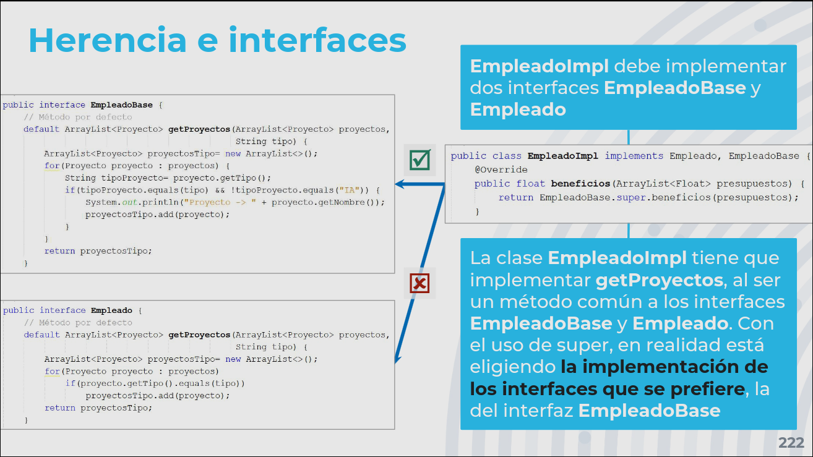

POO · curso 2
6. Interfaces
Escrito por Adrián Quiroga Linares.
6.1 Concepto de Interfaz
Una interfaz se entiende como un compromiso entre los programadores de una aplicación para que las clases que crean unos puedan ser usadas por otros sin errores o necesidad de adaptarlas. En las interfaces se define:
- Los tipos de datos que se deben crear en el programa. En el programa se pueden definir otras, pero al menos deben estar definidos los indicados en las interfaces.
- Los métodos que deben tener las clases del programa, indicando exactamente sus nombres, tipo de dato de los argumentos que recibe y el tipo de dato que devuelven. En las clases se pueden definir otras, pero al menos deben tener los de las interfaces que implementan.
El objetivo de las interfaces es establecer los métodos de interés, que alguna clase debe implementar y que serán visibles y accesibles por las otras clases. Estos métodos serán métodos publicos, pero no todos los métodos públicos son de interés, sólo lo son aquellos que proveen la funcionalidad requerida por las otras clases.
El uso de interfaces facilita el desarrollo y mantenimiento de los programas, ya que con ellas se dividen las responsabilidades entre los programadores y las clases se pueden implementar de manera independiente.
Un cambio en una clase que implementa los métodos de una interfaz no afectará a las otras clases que usan esa interfaz. Un cambio en la interfaz afectará de forma significativa tantos a las que clases que la implementan como a las que la usan. Por tanto, las interfaces deberían ser constantes, una vez se definen no se deberían cambiar.
6.2 Interfaces en Java
En java, una interfaz se entiende como una plantilla de una clase. Están formadas por constantes, declaraciones de métodos abstractos, métodos por defecto y métodos estáticos.
Las interfaces no tienen constructores porque no se pueden instanciar. Los atributos de una interfaz son implícitamente públicos, estáticos y finales (constantes). Los métodos de una interfaz son implícitamente públicos y abstractos.
Para que la interfaz se pueda usar, alguna clase debe implementarla, es decir, implementar sus métodos abstractos:
public class <nombre_class> implements <nombre_interfaz>

Una vez la interfaz haya sido implementada, se comportará como una clase, pudiendo invocar sus métodos abstractos (usando la implementación de la clase que la implementa), estáticos y por defecto.
Cuando una clase implementa una interfaz, adquiere todos sus métodos, igual que sucede en la herencia de clases. Entonces, se pueden entender que la clase que implementa una interfaz es su "derivada". Como consecuencia, con interfaces se pueden aplicar todos los conceptos de herencia, jerarquías, clases abstractas y polimorfismo.

Una interfaz es funcionalmente equivalente a (provee la misma funcionalidad que) una clase abstracta en la que todos los métodos son abstractos, todos los atributos son constantes y no tiene constructores.
Las diferencias entre clases abstractas e interfaces son:

- Escogeremos interfaces cuando queramos establecer de forma clara e inequívoca los métodos que se van a usar en el resto de clases del programa.
- Escogeremos clases abstractas cuando queramos hacer énfasis en la reutilización de código, incluyendo constructores que se invocan desde las clases base.
6.3 Métodos por defecto
Los métodos por defecto son métodos que se deben declarar e implementar en la interfaz de manera que los heredan las clases que la implementan.
default <tipo> <nombre_método> (<tipo><nombre_argumento>){codigo}
Operan únicamente con sus argumentos, pues todos los atributos de la interfaz son constantes. Si se quiere operar con los atributos de las clases que la implementan, se tendrán que pasar como argumento. Entonces, en este caso se debe valorar la conveniencia de usar métodos por defecto. El código será más difícil de entender y mantener, pues los métodos por defecto (que las clases que implementan la interfaz heredan) tendrán argumentos que no serían necesarios si se definieran en dicha clase.
Son implícitamente públicos. Pueden usar métodos abstractos de la interfaz, pues estarán implementados en las clases que la implementan.
Los métodos por defecto se heredan en las clases que implementan la interfaz y en las interfaces derivadas de la interfaz. Puede sobreescribirse y en la sobreescritura se puede usar super de la siguiente manera: <nombre_interfaz>.super.<nombre_método>

6.4 Métodos estáticos
Los métodos estáticos son aquellos que pueden ser invocados sin instanciar la clase en la que están definidos.
- Se cargan en memoria al arrancar el programa, así que están disponibles desde el iniciodel programa.
- Se pueden definir en interfaces y en cualquier tipo de clase (abstracta, instanciable o final)
- Sólo pueden invocar métodos de la clase o interfaz en la que están definidos que también sean estáticos Los métodos estáticos no son heredados ni en las clases ni en las interfaces derivadas.

| Métodos por defecto | Métodos estáticos |
|---|---|
| Sólo se pueden definir en interfaces. | Se pueden definir en interfaces y clases. |
| Pueden invocar cualquier tipo de método, incluyendo métodos por defecto, estáticos y abstractos. | Sólo pueden invocar métodos estáticos. |
| Son heredados por las clases e interfaces derivadas de la interfaz que los define. | No pueden ser heredados, son específicos de las clases o interfaces que los definen. |
| No están disponibles desde el arranque del programa, hay que crear un objeto para invocarlos. | Están disponibles desde el arranque del programa. |
| Ambos son estáticos, por lo que operan sólo sobre sus argumentos. |
6.5 Herencia e Interfaces
Una clase que implementa una interfaz es como su derivada y además puede implementar más de una interfaz, se puede entender en que las interfaces existe herencia múltiple.
Cuando una clase implementa varias interfaces, estas pueden tener algunos métodos en común.
- Si tienen en común métodos abstractos: no hay conflictos, la implementación en la clase será válida para todas las interfaces.
- Si tienen en común métodos estáticos, pues la clase no los hereda
- Si tienen en común métodos por defecto hay colisión entre los métodos, pues no existe ningún mecanismo para seleccionar automáticamente qué implementación se hereda. Para solucionar esto, la clase debe sobrescribir los métodos por defecto que son comunes a las interfaces que implementa. Así, en la propia sobreescritura se puede escoger qué implementación se usa con
super(o se puede hacer otra implementación nueva).
Cuando una interfaz hereda de varias interfaces que tienen algún método por defecto en común, hay el mismo problema y se soluciona de la misma manera, sobrescribiéndolo.
Entonces se pueden crear jerarquías de interfaces, que seguirán las siguientes reglas:
- Una interfaz derivada puede contener varias interfaces base, es decir, hay herencia múltiple entre interfaces.
- Como todos los métodos de una interfaz son implícitamente públicos, las interfaces derivadas heredarán todos los métodos delas bases, excepto los estáticos.
- No se puede establecer herencia entre clases e interfaces, es decir una clase no puede extender una interfaz ni viceversa.
Entonces, las jerarquías totales combinan los siguientes tipos de relaciones:
- Herencia de clases
- Herencia de interfaces
- Implementación de interfaces
Por tanto pueden ser muy complejas, pero lo importante es que son extensibles de manera relativamente sencilla
